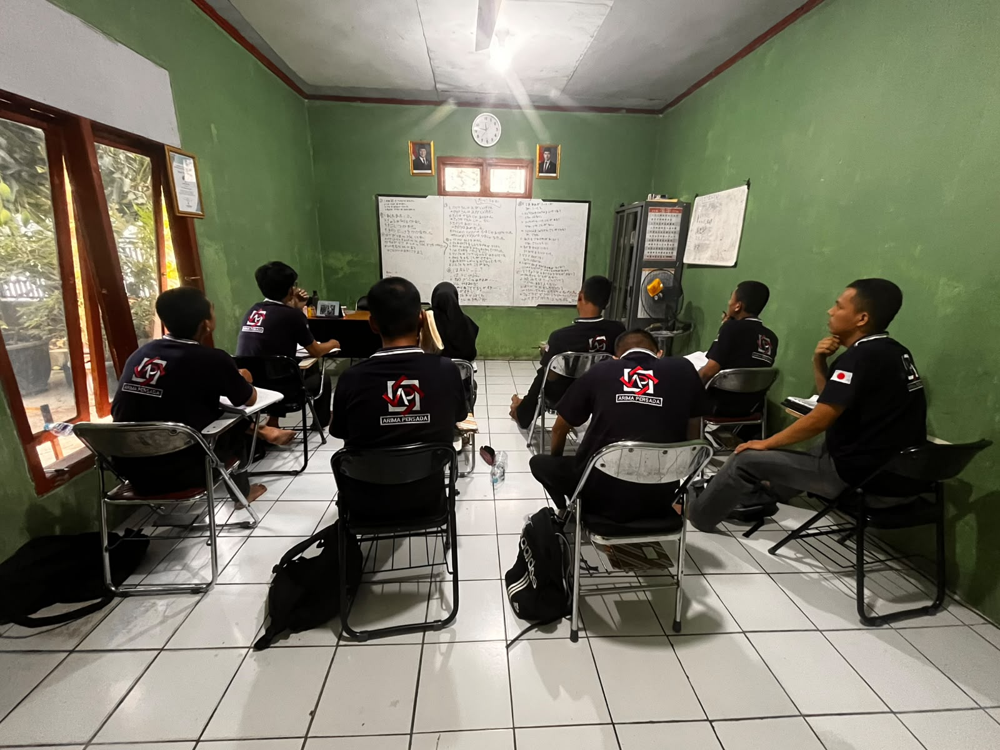
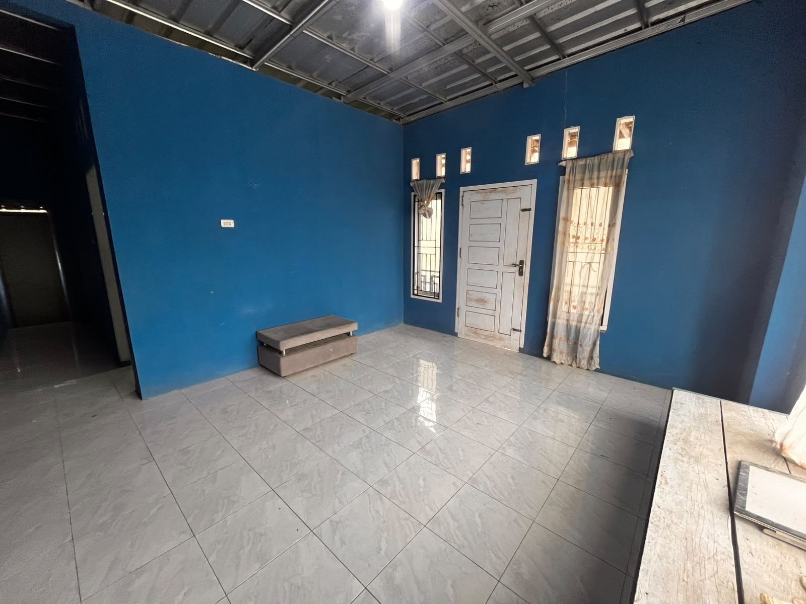
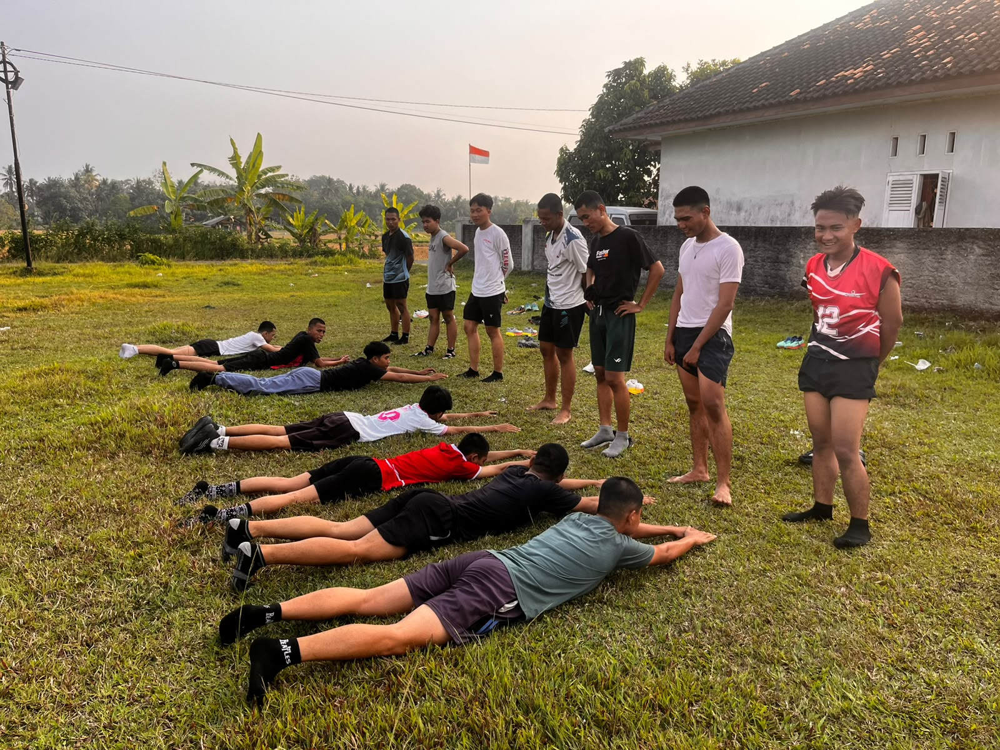
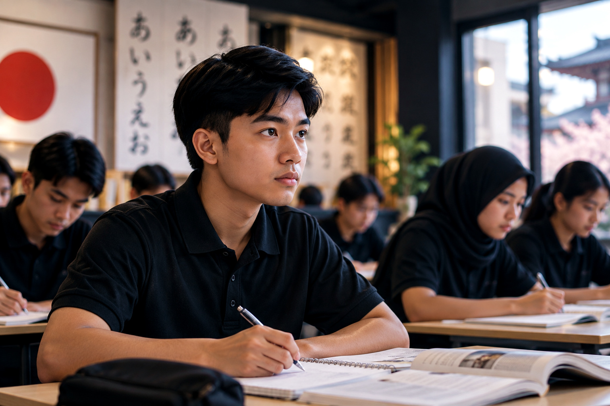

Sarana Prasarana
Lingkungan yang kondusif untuk membangun fokus dan kedisiplinan.




Lembaga pelatihan kerja swasta yang berdedikasi mencetak tenaga kerja Indonesia yang kompeten, berkarakter kuat, dan berdaya saing global.
Jelajahi Profil KamiLPKS Arima Persada (PT. Arima Bangkit Persada) hadir sebagai mitra terpercaya untuk mendidik, melatih, dan membentuk karakter calon tenaga kerja yang mandiri, kompeten, dan siap beradaptasi dengan budaya kerja Jepang.
Menjadi lembaga pelatihan kerja ke Jepang yang unggul, tepercaya, dan profesional dalam mencetak tenaga kerja Indonesia yang kompeten, berkarakter kuat, serta berdaya saing global.
Lingkungan aman dengan pembiasaan bahasa Jepang harian (Japanese Zone).
Proses pemberkasan dan penyaluran kerja terjamin karena bekerja sama dengan SO berizin Kemnaker.
Materi fokus pada percakapan (Kaiwa), istilah teknis, serta latihan ujian JFT/JLPT berbasis komputer (CBT).
Membentuk calon tenaga kerja yang disiplin, sopan (5S/Hourensou), dan tangguh di tempat kerja.
Bekal pengetahuan agar Anda tidak kaget saat tiba di Jepang.
Pilih kelas yang sesuai dengan latar belakang dan target karier Anda.

Magang / Pemula
Magang / Tokutei Ginou
Karyawan / Pekerja
Engineer (D3/S1)
Peluang luas di berbagai industri yang sedang berkembang pesat.
Merawat lansia dengan pendampingan harian. Sangat dicari karena populasi menua.
Bekerja di lini produksi otomotif atau elektronik dengan standar presisi tinggi.
Produksi makanan kemasan dan restoran dengan standar kebersihan ketat (HACCP).
Pembangunan infrastruktur dengan standar keselamatan dan kedisiplinan yang ketat.
Budidaya tanaman dan peternakan modern menggunakan teknologi canggih.
Pengembangan perangkat lunak dan desain teknik untuk lulusan D3/S1.
Layanan front office, housekeeping, dan restoran dengan omotenashi (keramahan Jepang).
Perakitan dan perawatan kendaraan di pabrik-pabrik terkemuka Jepang.
Proses yang sistematis dan legal dari awal hingga Anda tiba di Jepang.
Tes seleksi masuk, pemeriksaan kesehatan (Medical Check Up), dan orientasi.
Pendidikan Bahasa Jepang, Bintalsik (FMD), dan Etika Kerja di asrama.
Mengikuti ujian JFT-Basic/JLPT dan Ujian Keahlian (SSW Skill Test).
Wawancara langsung dengan perusahaan Jepang melalui jaringan SO mitra.
Pemprosesan dokumen Certificate of Eligibility (COE) dan Visa Kerja.
Pembekalan akhir pra-keberangkatan dan penerbangan menuju Jepang.
Kami hanya bermitra dengan Sending Organization (SO) berlisensi resmi Kemnaker RI dan OTIT Jepang.
Setiap proses—mulai dari legalitas dokumen, pengurusan Visa, hingga pendampingan di Jepang—dijamin aman, transparan, dan 100% Legal.
Lingkungan yang kondusif untuk membangun fokus dan kedisiplinan.



Dengarkan pengalaman mereka yang telah berhasil melangkah ke Jepang.
Jangan biarkan keraguan menunda impian Anda. Tim konselor kami siap membantu merancang jalur karier yang paling tepat.
Temukan Jalur Karier Anda (Kuis 1 Menit)